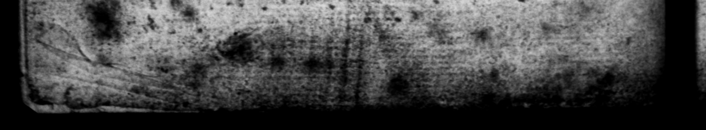

© "% = * . by £5 28S * n > - a. . a — ET » | N _ * = . * 42 * © = * *, ws ca d's r 9 . — . = o go The PRE. \ >." RES Judged it requiſite and uſeful tothe Publick, upon fevers} 1 © "Accounts, to have a Tranſſat ion of Sus TONIus pet. oh 0 Jad * . * — 6 4b * n * » » dcn Ore 0 * reger her with the Original 3 au nat was # Bee could not take with the Trauflarions.of ot 5 Mes t aubich I did not ) F-was obliged: to f De Character of Sus TON1 us ig that of a plain bung zimpartia Aut bor, that to Have writ wirt all fille Coolneſi, and withous tbe leaſt Byaſs upon his Fe 3 or any ot World a Faith and juſt Account of the Bebaviour and guſſe or - Coniceatment its the leaſt. He has, as an ro the contrary, * 1 2 * * "20 * 2 4 * * 284 <0 eat ets N GS - * " 4 * * a . © - Ld = * . * - * . % w_- 4 1 * © - ol © - © od » 1 0 * bs Z ” 8 5 . S Y *, 2 ” 4 . a. 5 F. bag, 1 e on for the Purpoſe, e. — — her Concern, than that of delivering ta tha Conduct, both publick and private, of the ſeveral rours, <vhoſe Lives he has giver us, Jo far as be himſelf could come at it. And it is a very juſt Obſervation. made of Bim, that be bas vrit their Lives, with the ſame From They led them. There is nothing in him like Flutter y, Diſ⸗ Hiſtorian ſnould do, given as well the foul, as the fair Side of them all; 4 thing very ncceſſary and bighly_ uſeful, in 7he compiling of Hiſtory, whatever Court-Par aſites, o other Aamirers of the abſulute Pier of Princes, may (pretend - As for the Tanguage of SvETONIvVs, it 73 juſt and proper, perfectly clear. of all Afectation. There are no Flights, no Notiriſbing, or playing with Mords at all in him. He is ſen" vious and grave, fteddily purſues his Point of telling. tb naked Truth, drawing ro the Lafe, and giving the juſt Cha: rafters of 'arhers, without any apparent Concern. fer it ow 45 an Auther, or what the Reader may think of his Talent Jar" Writing. And I hope the Tranſlatiom ell be found pretty well adapted to this Character of the Original. As for the Matter of his Hiſtory, there is G greas de of Parry in it, which makes it entertaining enough; but Jo, Pamp and Diganty, it — be du to come jar ſnort rbat of t be old Common alth f Nome. That cuas one continued Series of the greateſt aud thoft i portant Events, that xan come gvithin the Compaſs 9 Hiſtory, occafion'd h A | . for Empire, made & a t de ach with View to Worldly Grandeur and Glory, but e virtnoys, prudent, aud braue te the laſt degree. 2 N People, fred indeed un Legi were @ very Vittueus People for mam e 45 RR N To 5 A l n * - 7 . * l _ " i * . * * +» a Þ Y 55 «3 Saas - * a * —
